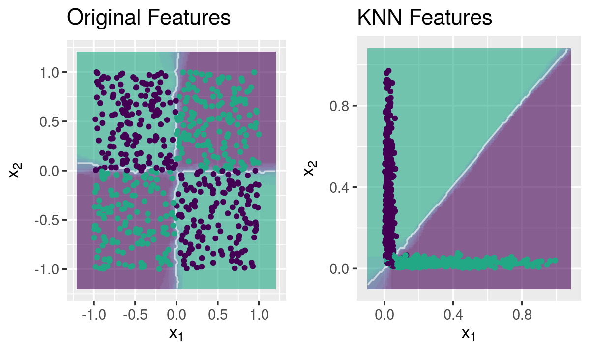
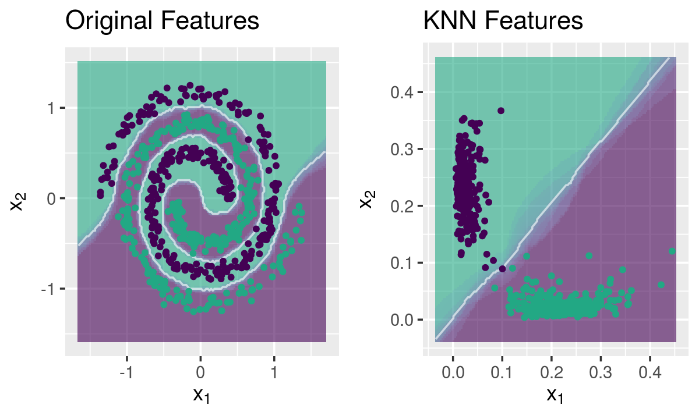

The fastknn provides a function to do feature extraction using KNN. It generates k * c new features, where c is the number of class labels. The new features are computed from the distances between the observations and their k nearest neighbors inside each class, as follows:
This procedure repeats for each class label, generating k * c new features. Then, the new training features are generated using a n-fold CV approach, in order to avoid overfitting. Parallelization is available. You can specify the number of threads via nthread parameter.
The feature extraction technique proposed here is based on the ideas presented in the winner solution of the Otto Group Product Classification Challenge on Kaggle.
The following example shows that the KNN features carry information about the original data that can not be extracted by a linear learner, like a GLM model:
library("mlbench")
library("caTools")
library("fastknn")
library("glmnet")
#### Load data
data("Ionosphere", package = "mlbench")
x <- data.matrix(subset(Ionosphere, select = -Class))
y <- Ionosphere$Class
#### Remove near zero variance columns
x <- x[, -c(1,2)]
#### Split data
set.seed(123)
tr.idx <- which(sample.split(Y = y, SplitRatio = 0.7))
x.tr <- x[tr.idx,]
x.te <- x[-tr.idx,]
y.tr <- y[tr.idx]
y.te <- y[-tr.idx]
#### GLM with original features
glm <- glmnet(x = x.tr, y = y.tr, family = "binomial", lambda = 0)
yhat <- drop(predict(glm, x.te, type = "class"))
yhat1 <- factor(yhat, levels = levels(y.tr))
#### Generate KNN features
set.seed(123)
new.data <- knnExtract(xtr = x.tr, ytr = y.tr, xte = x.te, k = 3)
#### GLM with KNN features
glm <- glmnet(x = new.data$new.tr, y = y.tr, family = "binomial", lambda = 0)
yhat <- drop(predict(glm, new.data$new.te, type = "class"))
yhat2 <- factor(yhat, levels = levels(y.tr))
#### Performance
sprintf("Accuracy with original features: %.2f", 100 * (1 - classLoss(actual = y.te, predicted = yhat1)))
sprintf("Accuracy with KNN features: %.2f", 100 * (1 - classLoss(actual = y.te, predicted = yhat2)))## [1] "Accuracy with original features: 83.81"## [1] "Accuracy with KNN features: 95.24"For a more complete example, take a look at this Kaggle Kernel showing how knnExtract() peforms on a large dataset.
KNN makes a nonlinear mapping of the original space and project it into a linear one, in which the classes are linearly separable.
Mapping the chess dataset
library("caTools")
library("fastknn")
library("ggplot2")
library("gridExtra")
## Load data
data("chess")
x <- data.matrix(chess$x)
y <- chess$y
## Split data
set.seed(123)
tr.idx <- which(sample.split(Y = y, SplitRatio = 0.7))
x.tr <- x[tr.idx,]
x.te <- x[-tr.idx,]
y.tr <- y[tr.idx]
y.te <- y[-tr.idx]
## Feature extraction with KNN
set.seed(123)
new.data <- knnExtract(x.tr, y.tr, x.te, k = 1)
## Decision boundaries
g1 <- knnDecision(x.tr, y.tr, x.te, y.te, k = 10) +
labs(title = "Original Features")
g2 <- knnDecision(new.data$new.tr, y.tr, new.data$new.te, y.te, k = 10) +
labs(title = "KNN Features")
grid.arrange(g1, g2, ncol = 2)
Mapping the spirals dataset
## Load data
data("spirals")
x <- data.matrix(spirals$x)
y <- spirals$y
## Split data
set.seed(123)
tr.idx <- which(sample.split(Y = y, SplitRatio = 0.7))
x.tr <- x[tr.idx,]
x.te <- x[-tr.idx,]
y.tr <- y[tr.idx]
y.te <- y[-tr.idx]
## Feature extraction with KNN
set.seed(123)
new.data <- knnExtract(x.tr, y.tr, x.te, k = 1)
## Decision boundaries
g1 <- knnDecision(x.tr, y.tr, x.te, y.te, k = 10) +
labs(title = "Original Features")
g2 <- knnDecision(new.data$new.tr, y.tr, new.data$new.te, y.te, k = 10) +
labs(title = "KNN Features")
grid.arrange(g1, g2, ncol = 2)